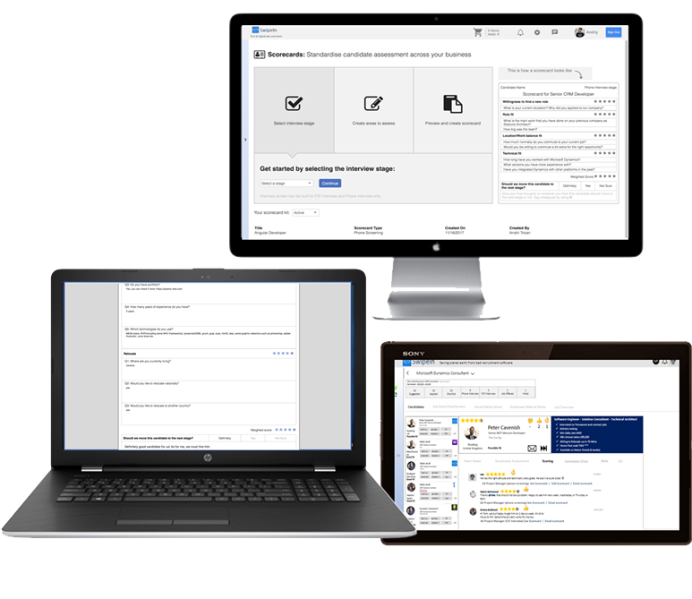

keyboard_arrow_left
Implement candidate scorecards in to standardise candidate assessment through the hiring cycle and improve retention rates.
Don’t lose track of candidate notes and keep your recruiters and hiring managers team always in sync

keyboard_arrow_right